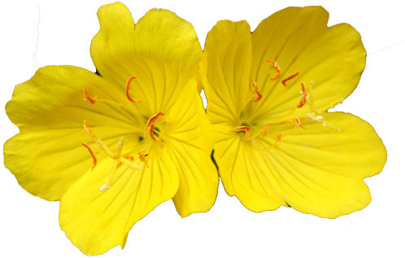
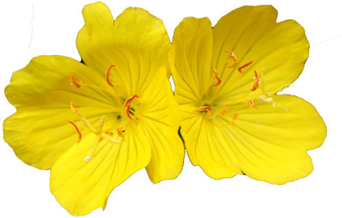

봄,
여름,
꽃,
이야기.
5~7월 사이에서 피어나는
꽃들의 설화를 모아보았습니다.
모란
삼국유사에 보면 우리나라에 모란이 들어온
것은 신라 진평왕 때 당 태종이 홍자백의
모란 그림 한 폭과 그 씨를 보내 왔었다고
한다. 이때 아직 공주로 있던 선덕여왕이 그
그림을 보고 "꽃은 아름다우나 벌과 나비가
없으니 필경 향기가 없겠구나" 하고 말했다.
그런데 씨를 심어 꽃이 피니 과연 향기가
없었으므로 공주의 명민한 선견을
칭찬했다고 한다.
은방울꽃
옛날 용감하고 악을 미워하며 선을 위해서는
조금도 두려워하지 않는 레오날드라는
청년이 있었다. 하루는 사냥을 갔다가 항상
마을 사람을 괴롭히며 해치던 큰 독사를
우연히 만나게 되었다.
그 청년은 자기를 향해 달려오는 독사를 보는
순간 이 독사를 없애버려 마을 사람들의
불안을 덜어주어야 되겠다는 생각에 그
독사에게 덤벼들었다. 이 격투는 힘이 서로
비슷하여 사흘 밤낮을 싸운 끝에 드디어
레오날드가 이겼다. 그러나 심한 상처를 입고
쓰러질 듯이 걸어가는 그의 발자취엔 붉은
핏방울이 방울방울 떨어졌다. 그 떨어진
핏자국마다 예쁜 꽃이 바로
은방울꽃이었다는 이야기다.
또 다른 이야기로는 요정들이 밤 축제를 하고
난 후 풀줄기에 컵을 걸어놓고 갔는데 그게
꽃이 되었다는 이야기도 있다.
장미
에덴동산에서 아담과 이브가 쫓겨난
세상에서 꽃이 없었다.
그곳에 지라라는 아름다운 유대 처녀가
있었는데 하무엔이라는 불량청년은 이
처녀를 사랑했다.그러나 그녀에게서 사랑을
거절당한 하무엔은 지라가 마녀라고 뜬
소문을 퍼뜨렸다.
그 당시의 규율은 마녀를 화형에 처하던
때이므로 지라도 장작더미 위에 있는
화형대에 묶였다.막 불꽃에 말려들 때 신이
지라의 죄 없음을 불쌍히 여겨 불을 끄고
그녀를 살리니 화형대의 기둥에서 불붙던
쪽은 장미가 피고 불붙지 않은 쪽에는 흰
장미꽃이 피어났다. 이것이 인간세계의 맨
처음 꽃이라고 한다.
두 번째 이야기는 영원한 아름다움과
신비의 상징인 사랑과 미의 여신
아프로디테는 자기도 다른 신들과
마찬가지로 아름다운 것을 창조할 수
있다고 말하고, 대지에 장미꽃을 피웠다.
하지만 다른 전설로는 거품 속에서
아프로디테가 태어날 때 그와 함께
장미꽃이 만들어졌다고도 한다.

백일홍
바닷가 근처의 어촌 마을에서 거대한 이무기가
나타나 수많은 사람들을 죽이는 악행을
저질렀다. 그러자 사람들은 이무기를 달래기
위해 처녀를 이무기의 제물로 바쳤지만
이무기의 극성은 날로 심해졌다.
그러던 어느 날, 마을에 젊은 떠돌이 무사가
이무기에 대한 얘기를 듣고 마을 사람들을 돕기
위해 이무기를 처치하겠다고 공언했으며
이번에 제물로 뽑힌 처녀와 사랑에 빠졌다.
무사는 마을 사람들에게 자신이 이무기를
처치하는데 성공하면 하얀 기를 올리고 자신이
이무기에게 죽게 되면 붉은 기를 올리겠다고
얘기한 뒤 이무기를 잡으러 배를 타고 떠났다.
그 뒤 처녀는 무사가 돌아오는 배를
바라보았는데 붉은 기가 걸려 있는 것을 보고는
상심해서 바다에 몸을 던졌다. 사실 무사는
이무기를 퇴치한 다음 흰 기를 걸었는데,
이무기의 목을 벨 때 피가 흰 기에 튀면서 붉게
물든 것이었다. 나중에 돌아온 무사는 마을
사람들이 전해 준 비보를 듣고 자신의 실수에
대해 후회한 다음 바닷속으로 몸을 던져 처녀의
뒤를 따랐다. 사람들은 이들의 안타까운 죽음에
두 사람의 시신을 건져 언덕의 양지바른 곳에
묻어주었으며 시간이 흘러 봄이 되자 두 연인이
잠든 무덤가에 작고 예쁜 붉은 꽃 한송이가
백일동안 피어 있었다. 촌장은 이 꽃을 보고 두
연인의 사랑이 꽃으로 다시 태어나
100일 간 그들의 사랑을 밝혀주고 있다면서
그 꽃을 백일홍이라 불렀다.

물망초
옛날에 서로 사랑하던 루돌프라는 청년과
펠타라는 아름다운 소녀는 결혼을 앞두고
손에 손을 잡고 즐거운 내일을 이야기하며
맑은 강가를 산책했다. 해가 서쪽으로 기울
무렵 그들은 강가에 앉아 이야기의 꽃을
피우고 있었다. 이때 강둑에 핀 하늘빛 작은
꽃이 노을을 받아 곱게 비치는 것을
무심결에 본 펠타는 그 꽃을 가르키면서
"어쩌면 저렇게 고울까요. 나도 저 꽃처럼
언제까지나 아름답고 또 사랑받고
있었으면..." 하고 말했다. 루돌프는
"언제까지나 이제 그 말을 잊지 않는 증거로
저 꽃을 따오겠습니다." 하고 물가로
내려갔다. 꽃 한가지를 꺾는 순간 청년은
발이 미끄러져 그 강의 거센 물결 속에 풍덩
빠져 휩쓸리고 말았다. 당황해 하는 펠타의
부르짖음에 루돌프는 있는 힘을 다해 손에
쥐었던 물망초를 언덕 위로 내던지며
"언제까지나 잊지 말아줘요."하고 소리치며
물살에 말려 사라지고 말았다.
후세 사람들이 이 꽃을 물망초라 부르게
되었다고 한다.
달맞이꽃
태양신을 숭배하는 마을에 로즈라는 처녀가
있었다. 마을 사람들은 태양신을 숭배하는만큼
낮에 주로 활동했는데,유독 로즈만은 낮보다
밤을 더 좋아했다. 매년 여름이면 결혼 축제가
열렸는데, 이 축제에서 처녀를 고르는 순서는
규율로 정해져있었다. 그리고 청혼을 받은
처녀는 절대 거절을 하면 안되는 엄격한 규율이
있었다. 마침내 축제 날이 되었다. 로즈는
추장의 작은 아들이 자신을 선택해주기를
간절히 바라고 있었다. 그들은 1년 전부터
사겼던 사이였다. 그러나 그는 로즈가 아닌
다른 처녀를 선택해버렸고, 덕분에 로즈는 다른
남자의 청혼을 받고 말았다. 화가 난 로즈는
청혼을 건넨 남자의 손을 뿌리치고 나가버렸다.
축제는 발칵 뒤집어졌고, 로즈는 그녀를
따라나온 병사들에게 잡혀 규율에 따라 귀신의
골짜기라는 곳으로 즉시 추방되었다. 추방된
로즈는 그곳에서 달을 추장의 작은 아들로
동일시 여기며 매일 밤마다 달을 사모하기
시작했다. 축제가 있고 1년이 흘렀다. 추장의
작은 아들은 보는 눈을 피해 몰래 귀신의
골짜기를 찾았다. 그는 로즈에게 구하러왔다며
큰 소리로 그녀를 불렀지만 돌아오는 것은
자신의 메아리뿐이었다. 그 곳에는 추장의 작은
아들말고는 아무도 없었다. 단지, 달빛을 따라
피어난 한 송이 꽃만이 있을뿐이었다.
로즈는 죽어서 꽃이 되어 사랑했던 사람을
기다리듯이 밤이면 언제나 달을 보고 피어났던
것이었는데 이 꽃이 바로 달맞이꽃이다. 그리고
로즈가 추장의 아들과 사귀고 2년만에 죽은
것이 달맞이꽃이 두해살이풀인 이유라고 한다.
두 번째 이야기로는 옛날에 별을 사랑하는
요정들 중에 홀로 달을 사랑하는 님프가 살고
있었다. 그런데 이 님프는 별이 뜨면 달을 볼 수
없다고 생각했기 때문에 무심코 이런 말을 하게
되었다. 별이 모두 없어졌으면…, 그럼 매일
매일 달을 볼 수 있을 텐데…." 그러자 이 말을
들은 다른 님프들이 제우스에게 곧바로 달려가
이 사실을 고했다. 화가 난 제우스는 달이
비치지 않는 곳으로 그 님프를 쫓아버리고
말았다. 뒤늦게 그 사실을 알게 된 달의 신은
자기를 좋아했던 님프를 찾아 헤맸다. 그러나
곳곳에서 제우스가 방해를 하는 통에 둘은 끝내
만날 수 없었다. 결국 그 님프는 너무나 지친
나머지 병들어 죽게 됐고, 님프가 죽은 후에야
찾아 올 수 있었던 달의 신은 눈물을 흘리며
님프를 땅에 묻어줬다. 이를 본 제우스는 죽은
그녀의 영혼을 달맞이꽃으로 환생시켜주었다.
그리고 지금까지도 달맞이꽃은 달을 따라 꽃을
밤에만 피우고 있다. 그래서인지 그리운 달을
기다리는 달맞이꽃은 기다림, 밤의 요정,
소원이라는 꽃말을 가지고 있다.


 
